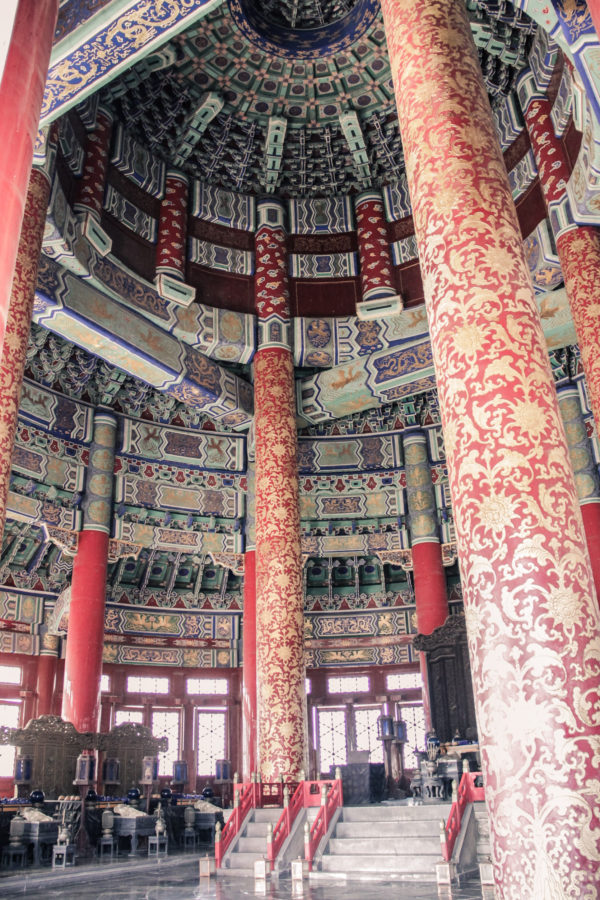
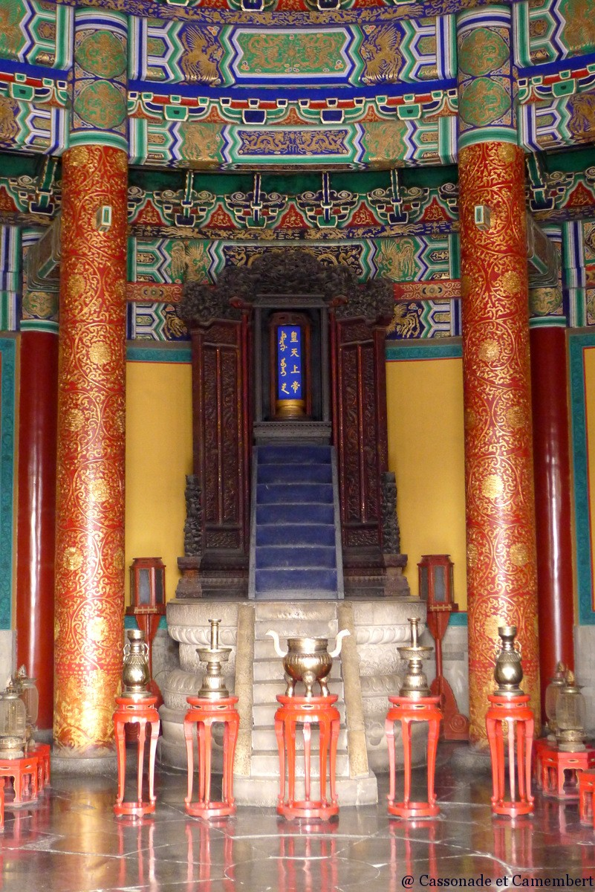

.jpg)
Temple du Ciel, quoi savoir
Situé au sud de la Cité interdite, du côté est Yongnei Dajie, le site originel de l’Autel du ciel et de la terre a été achevé en même temps que la Cité interdite soit en 1420, à la dix-huitième année du règne Ming de l’empereur Yongle. Dans la neuvième année du règne de l’empereur Jiajing (1530), il fut décidé d’offrir des sacrifices distincts à la terre et au ciel ; pour les sacrifices dédiés spécifiquement au ciel, on construisit donc l’Autel du tertre circulaire au sud de la salle principale. Et c’est ainsi que l’Autel du ciel et de la terre fut renommé Temple du ciel lors de la treizième année du règne de l’empereur Jiajing (1534). Le Temple du ciel, qui s’étend sur 273 ha, a été aménagé sous sa forme actuelle en 1749, après avoir été reconstruit par les empereurs Qing Qianlong et Guangxu.
Le Temple du ciel s’étend sur une surface de 273 ha et ses bâtiments anciens sont bien préservés. Le paysage et les sentiers du jardin ont conservé leur plan historique. Tous les éléments nécessaires pour affirmer la valeur des biens sont regroupés dans la zone délimitant le bien. Ceci montre pleinement le caractère unique du paysage culturel traditionnel chinois.
Le Temple du Ciel a été classé au patrimoine mondial de l' UNESCO en 1998. Il occupe un espace trois fois plus grand que la Cité Interdite et constitue le plus vaste complexe d'anciens bâtiments sacrificiels qui existe en Chine.
Interieur
L'intérieur du Temple du Ciel est composées d'une multitudes de pièces comme la salle des prières pour de bonnes récoltes .
Visiter le Temple du Ciel
.jpg)
Comme la plupart des parcs en Chine, le parc du Temple du Ciel a quatre entrées, mais les portes Est et Sud sont les plus utilisées par les visiteurs. Il est idéal d'entrer par la porte Sud et de sortir par la porte Est, car cet itinéraire vous permettra de mettre vos pas dans les pas des empereurs des dynasties Ming et Qing lors des cérémonies annuelles de prière et de sacrifice. Cet itinéraire vous permettra de voir tous les bâtiments sacrificiels importants du complexe, notamment l’autel du ciel, le mur de l'écho et la salle des prières pour de bonnes moissons. Si vous suivez cet itinéraire, vous n'aurez pas besoin de retourner dans le parc pour sortir.
Activités du matin au parc du Temple du Ciel
La salle des prières pour de bonnes moissons est incontournable lors de votre visite au Temple du Ciel. Le bâtiment circulaire à trois pignons est l'endroit où les empereurs présidaient aux cérémonies: des sacrifices s'y déroulaient et on faisait brûler de l'encens au cours de prières pour que temps soit clément et les récoltes abondantes. Ce bâtiment est entièrement en bois, aucun clou n'a été utilisé pour sa construction. Ceci est tout à fait remarquable compte tenu de la taille de la structure de l'édifice. Les visiteurs peuvent s’approcher de la salle et la contourner complètement mais l'entrée en est interdite.
Plusieurs types de billets sont disponibles au guichet. Assurez-vous d’acheter le billet combiné, qui comprend l'entrée au parc et aux temples intérieurs.
Les temples et les palais sont entourés de vastes zones de verdure, notamment une forêt de cyprès anciens. Dans le parc vous trouverez de nombreux bancs et des espaces ombragés pour vous promener et vous détendre après la visite du temple.
Le parc du Temple du Ciel est un lieu très populaire pour les Chinois qui viennent y pratiquer des arts martiaux et d’autres activités, surtout le matin. Se promener dans le parc et regarder la population locale se livrer à ses diverses activités matinales est une expérience culturelle unique pendant une visite du parc.
Le Temple du Ciel fourmille de culture et d'histoire, mais il y a peu de plaques ou de descriptions de ce que vous voyez.Il est donc préférable d'engager un guide pour tirer le meilleur parti de votre visite.
Nous recommandons chapeau et / ou crème solaire pour vous protéger du soleil. Bien qu'il y ait beaucoup d'arbres dans le parc, il y a peu de zones ombragées autour du temple principal. Assurez-vous également de porter des chaussures confortables, car le parc est très grand et vous devrez beaucoup marcher pour voir tous les édifices importants.